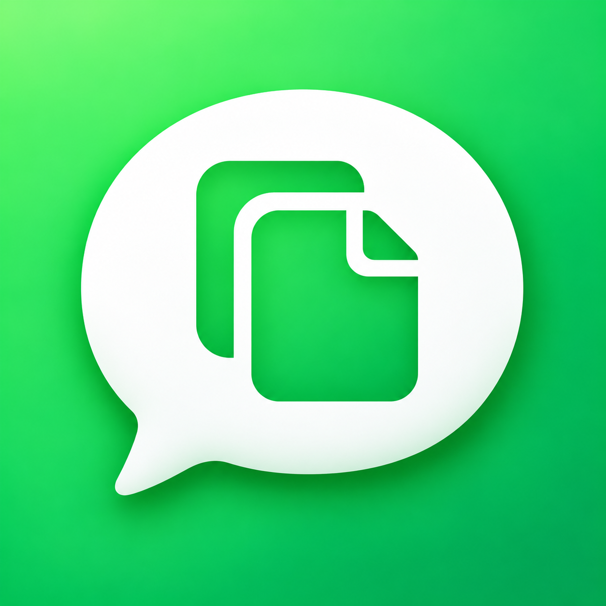

短信通知复制
作者：Rookib
描述
主要功能
- 短信通知中识别到带明确提示词的 4–8 位数字验证码时，显示“复制”按钮。
- 支持系统通知、锁屏通知及已适配的 Aperture 胶囊横幅；横幅收起后，再点开灵动岛的展开卡片也会显示复制按钮。点击复制不会打开短信，并短暂显示“已复制”。
- 只处理当前通知，不读取短信历史、不上传内容。点击后才写入本机剪贴板，约 3 分钟后到期。
适配范围
- 适用于 iOS 16–17 的 RootHide 隐根环境，不适用于普通 Rootless 或 Rootful。
- Aperture 适配限于已验证的版本和布局。字母数字混合码、歧义数字及部分短信模板可能不显示按钮。
- 遵守系统通知预览设置，正文隐藏时不显示验证码按钮；尚未覆盖所有预览设置组合。
安装与使用
- 安装后刷新桌面，无需单独设置。收到符合条件的短信通知后，轻点“复制”即可。
- 如果此前安装了旧标识 local.codex.smscodecopy，请先卸载旧包，再安装本包并刷新桌面。
验证情况
- 0.2.4 已在 iOS 16.0.2、Aperture 1.0.3.6-215 实机验证：横幅收起后重新展开有复制按钮，点击显示“已复制”，不会打开短信。
- 75 项验证码识别测试及 8 项视图归属检查通过。
- 保留 0.2.0 的 iOS 17 通知适配；0.2.0 曾在 iOS 17.3.1 验证桌面胶囊与锁屏复制。0.2.4 新增的重新展开卡片功能尚未在 iOS 17 实机验证。
当前版本0.2.4
作者Rookib
更新
0.2.4 · 2026-11-02
- 修复 Aperture 横幅收起后，重新点开灵动岛展开卡片没有复制按钮的问题。
- 复制前核对当前卡片与通知，避免复用旧卡片造成内容错配；保留通知预览隐私检查。
- 点击后显示“已复制”，不打开短信。已在 iOS 16.0.2 实机验证，iOS 17 的新增展开卡片功能待实测。
0.2.0
- 增加 iOS 17 通知接口适配，目标系统范围为 iOS 16–17。
- 增加系统方法类型检查和延迟加载重试，保留原有通知复制按钮。
- 0.2.0 配套中文详情和专属图标。